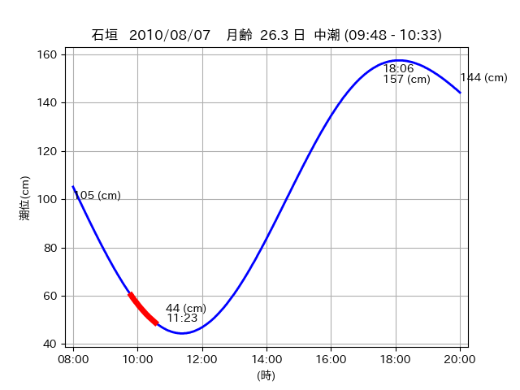

<!DOCTYPE html>
<html>
<head>
    
    <meta http-equiv="content-type" content="text/html; charset=UTF-8" />
    
        <script>
            L_NO_TOUCH = false;
            L_DISABLE_3D = false;
        </script>
    
    <style>html, body {width: 100%;height: 100%;margin: 0;padding: 0;}</style>
    <style>#map {position:absolute;top:0;bottom:0;right:0;left:0;}</style>
    <script src="https://cdn.jsdelivr.net/npm/leaflet@1.9.3/dist/leaflet.js"></script>
    <script src="https://code.jquery.com/jquery-3.7.1.min.js"></script>
    <script src="https://cdn.jsdelivr.net/npm/bootstrap@5.2.2/dist/js/bootstrap.bundle.min.js"></script>
    <script src="https://cdnjs.cloudflare.com/ajax/libs/Leaflet.awesome-markers/2.0.2/leaflet.awesome-markers.js"></script>
    <link rel="stylesheet" href="https://cdn.jsdelivr.net/npm/leaflet@1.9.3/dist/leaflet.css"/>
    <link rel="stylesheet" href="https://cdn.jsdelivr.net/npm/bootstrap@5.2.2/dist/css/bootstrap.min.css"/>
    <link rel="stylesheet" href="https://netdna.bootstrapcdn.com/bootstrap/3.0.0/css/bootstrap-glyphicons.css"/>
    <link rel="stylesheet" href="https://cdn.jsdelivr.net/npm/@fortawesome/fontawesome-free@6.2.0/css/all.min.css"/>
    <link rel="stylesheet" href="https://cdnjs.cloudflare.com/ajax/libs/Leaflet.awesome-markers/2.0.2/leaflet.awesome-markers.css"/>
    <link rel="stylesheet" href="https://cdn.jsdelivr.net/gh/python-visualization/folium/folium/templates/leaflet.awesome.rotate.min.css"/>
    
            <meta name="viewport" content="width=device-width,
                initial-scale=1.0, maximum-scale=1.0, user-scalable=no" />
            <style>
                #map_289b7a731a04d5e66fb3723922c92ffc {
                    position: relative;
                    width: 2048.0px;
                    height: 1600.0px;
                    left: 0.0%;
                    top: 0.0%;
                }
                .leaflet-container { font-size: 1rem; }
            </style>
        
</head>
<body>
    
    
            <div class="folium-map" id="map_289b7a731a04d5e66fb3723922c92ffc" ></div>
        
</body>
<script>
    
    
            var map_289b7a731a04d5e66fb3723922c92ffc = L.map(
                "map_289b7a731a04d5e66fb3723922c92ffc",
                {
                    center: [24.373, 123.952],
                    crs: L.CRS.EPSG3857,
                    ...{
  "zoom": 12,
  "zoomControl": true,
  "preferCanvas": false,
}

                }
            );

            

        
    
            var tile_layer_38d78552af09cd6b0440d4c68805c8c2 = L.tileLayer(
                "https://cyberjapandata.gsi.go.jp/xyz/seamlessphoto/{z}/{x}/{y}.jpg",
                {
  "minZoom": 0,
  "maxZoom": 18,
  "maxNativeZoom": 18,
  "noWrap": false,
  "attribution": "\u5730\u7406\u9662\u5730\u56f3",
  "subdomains": "abc",
  "detectRetina": false,
  "tms": false,
  "opacity": 1,
}

            );
        
    
            tile_layer_38d78552af09cd6b0440d4c68805c8c2.addTo(map_289b7a731a04d5e66fb3723922c92ffc);
        
    
            var marker_387913a3bfd7cee420cda500f8e54010 = L.marker(
                [24.3286, 123.9474],
                {
}
            ).addTo(map_289b7a731a04d5e66fb3723922c92ffc);
        
    
            var icon_2431aca04cfb4e4ce5d5a54f51d12795 = L.AwesomeMarkers.icon(
                {
  "markerColor": "orange",
  "iconColor": "white",
  "icon": "info-sign",
  "prefix": "glyphicon",
  "extraClasses": "fa-rotate-0",
}
            );
        
    
        var popup_6dfc1ca18d703a7b5513e73ebdeab167 = L.popup({
  "maxWidth": "100%",
});

        
            
                var html_f5c32b81904d0e60595b0087986eaa86 = $(`<div id="html_f5c32b81904d0e60595b0087986eaa86" style="width: 100.0%; height: 100.0%;"><table><tr><td></td></tr><tr><td><center>20100807 No.1 </center></table></td></tr></table</div>`)[0];
                popup_6dfc1ca18d703a7b5513e73ebdeab167.setContent(html_f5c32b81904d0e60595b0087986eaa86);
            
        

        marker_387913a3bfd7cee420cda500f8e54010.bindPopup(popup_6dfc1ca18d703a7b5513e73ebdeab167)
        ;

        
    
    
                marker_387913a3bfd7cee420cda500f8e54010.setIcon(icon_2431aca04cfb4e4ce5d5a54f51d12795);
            
    
            var poly_line_42b25c2a6bea3d1506f2cfc4461fc89a = L.polyline(
                [[24.3286, 123.9474], [24.318, 123.9519]],
                {"bubblingMouseEvents": true, "color": "#00FFFF", "dashArray": null, "dashOffset": null, "fill": false, "fillColor": "#00FFFF", "fillOpacity": 0.2, "fillRule": "evenodd", "lineCap": "round", "lineJoin": "round", "noClip": false, "opacity": 1.0, "smoothFactor": 1.0, "stroke": true, "weight": 3}
            ).addTo(map_289b7a731a04d5e66fb3723922c92ffc);
        
    
            var marker_8984b945fad44fb4a8920eb899966898 = L.marker(
                [24.3722, 123.9517],
                {
}
            ).addTo(map_289b7a731a04d5e66fb3723922c92ffc);
        
    
            var icon_319b5c6edd12c28ce1ecf279ac708748 = L.AwesomeMarkers.icon(
                {
  "markerColor": "orange",
  "iconColor": "white",
  "icon": "info-sign",
  "prefix": "glyphicon",
  "extraClasses": "fa-rotate-0",
}
            );
        
    
        var popup_8b282123f0733414fb42c5f00dac72ac = L.popup({
  "maxWidth": "100%",
});

        
            
                var html_49b620714731de424c61776c6b21433e = $(`<div id="html_49b620714731de424c61776c6b21433e" style="width: 100.0%; height: 100.0%;"><table><tr><td></td></tr><tr><td><center>20100807 No.2 </center></table></td></tr></table</div>`)[0];
                popup_8b282123f0733414fb42c5f00dac72ac.setContent(html_49b620714731de424c61776c6b21433e);
            
        

        marker_8984b945fad44fb4a8920eb899966898.bindPopup(popup_8b282123f0733414fb42c5f00dac72ac)
        ;

        
    
    
                marker_8984b945fad44fb4a8920eb899966898.setIcon(icon_319b5c6edd12c28ce1ecf279ac708748);
            
    
            var poly_line_ae79168cf7c46f8f35dc496a063051b0 = L.polyline(
                [[24.3722, 123.9517], [24.373, 123.9527]],
                {"bubblingMouseEvents": true, "color": "#FF00FF", "dashArray": null, "dashOffset": null, "fill": false, "fillColor": "#FF00FF", "fillOpacity": 0.2, "fillRule": "evenodd", "lineCap": "round", "lineJoin": "round", "noClip": false, "opacity": 1.0, "smoothFactor": 1.0, "stroke": true, "weight": 3}
            ).addTo(map_289b7a731a04d5e66fb3723922c92ffc);
        
    
            var marker_05e6aae4425314df2605178e7072b1c5 = L.marker(
                [24.3725, 123.9517],
                {
}
            ).addTo(map_289b7a731a04d5e66fb3723922c92ffc);
        
    
            var icon_94c566d927b4bcedabaa6ce2c29bd149 = L.AwesomeMarkers.icon(
                {
  "markerColor": "orange",
  "iconColor": "white",
  "icon": "info-sign",
  "prefix": "glyphicon",
  "extraClasses": "fa-rotate-0",
}
            );
        
    
        var popup_384a8f232184d5207d7c3e21cee90730 = L.popup({
  "maxWidth": "100%",
});

        
            
                var html_ba381f503bad1333b10c5ea3d5953d83 = $(`<div id="html_ba381f503bad1333b10c5ea3d5953d83" style="width: 100.0%; height: 100.0%;"><table><tr><td></td></tr><tr><td><center>20100807 No.3 </center></table></td></tr></table</div>`)[0];
                popup_384a8f232184d5207d7c3e21cee90730.setContent(html_ba381f503bad1333b10c5ea3d5953d83);
            
        

        marker_05e6aae4425314df2605178e7072b1c5.bindPopup(popup_384a8f232184d5207d7c3e21cee90730)
        ;

        
    
    
                marker_05e6aae4425314df2605178e7072b1c5.setIcon(icon_94c566d927b4bcedabaa6ce2c29bd149);
            
    
            var poly_line_250738569c9d5093aa8fef588fae90b3 = L.polyline(
                [[24.3725, 123.9517], [24.373, 123.9525]],
                {"bubblingMouseEvents": true, "color": "#FF00FF", "dashArray": null, "dashOffset": null, "fill": false, "fillColor": "#FF00FF", "fillOpacity": 0.2, "fillRule": "evenodd", "lineCap": "round", "lineJoin": "round", "noClip": false, "opacity": 1.0, "smoothFactor": 1.0, "stroke": true, "weight": 3}
            ).addTo(map_289b7a731a04d5e66fb3723922c92ffc);
        
</script>
</html>